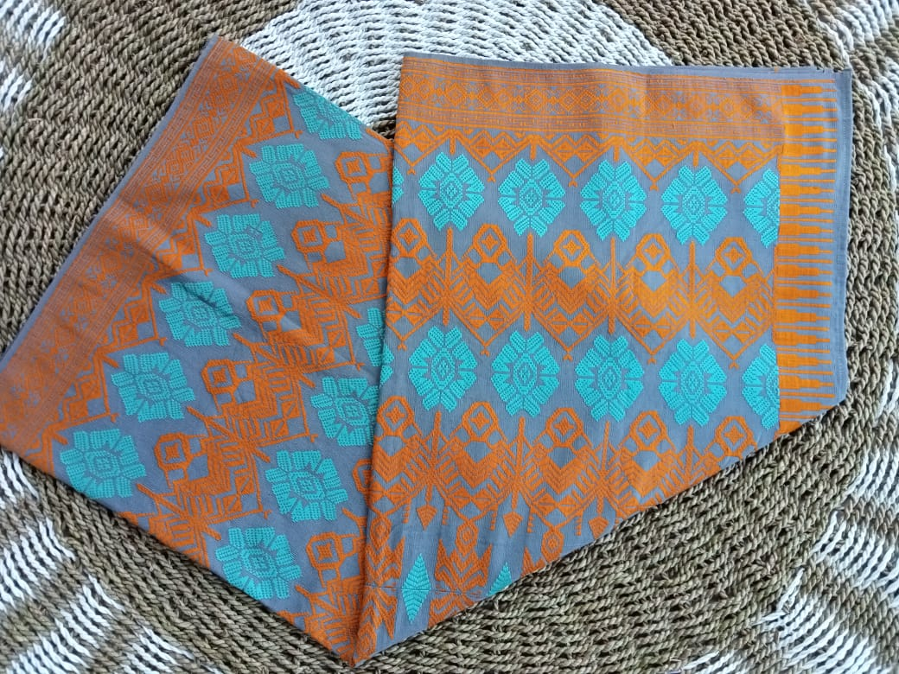
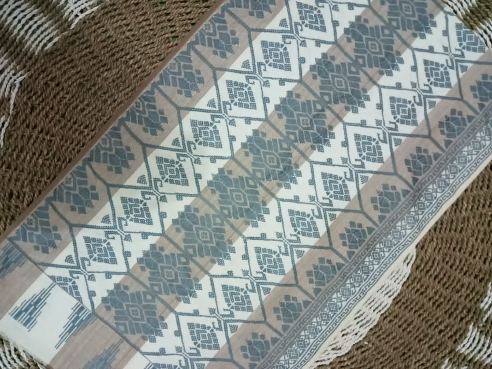
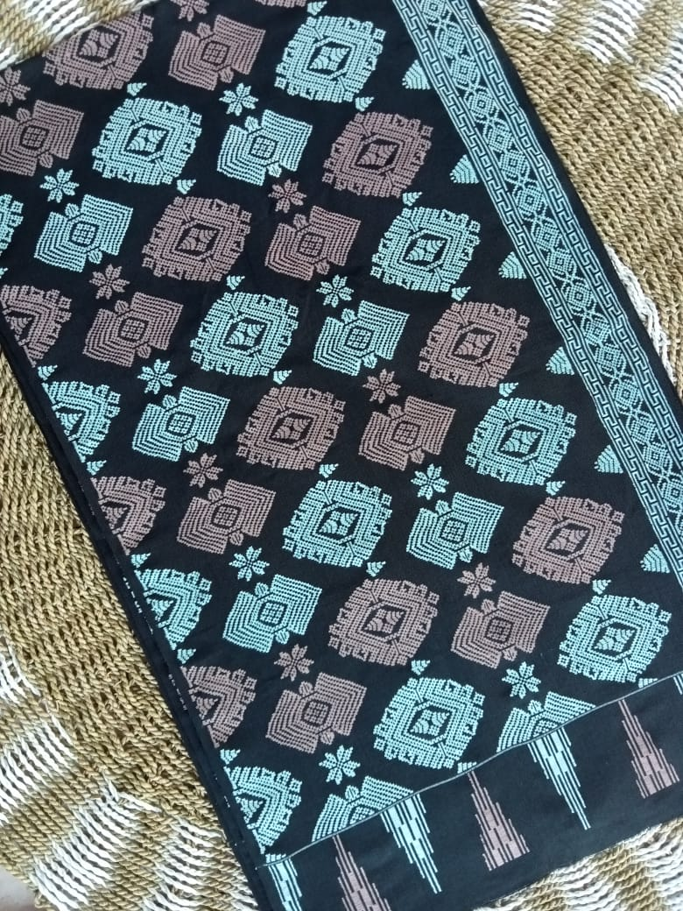
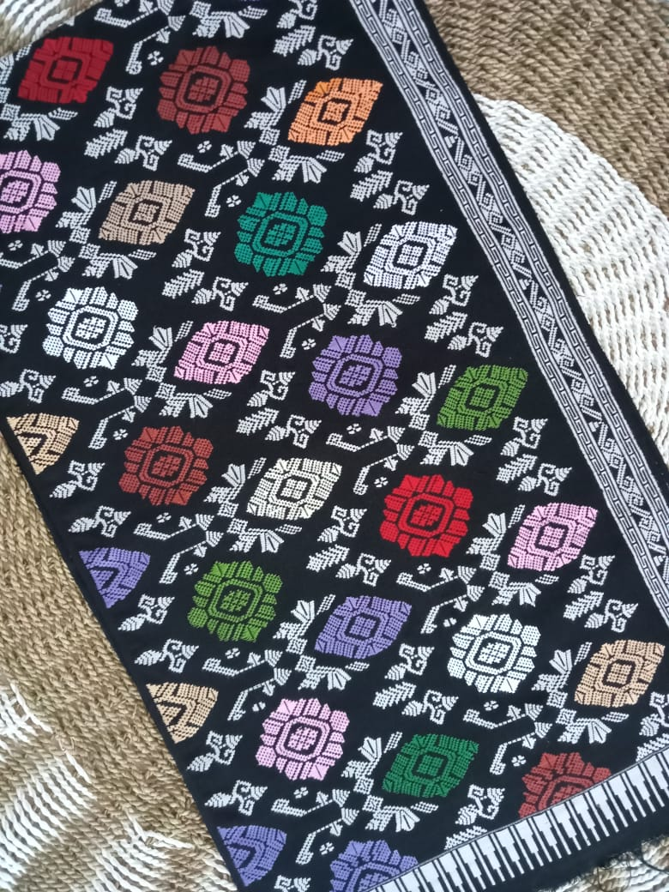
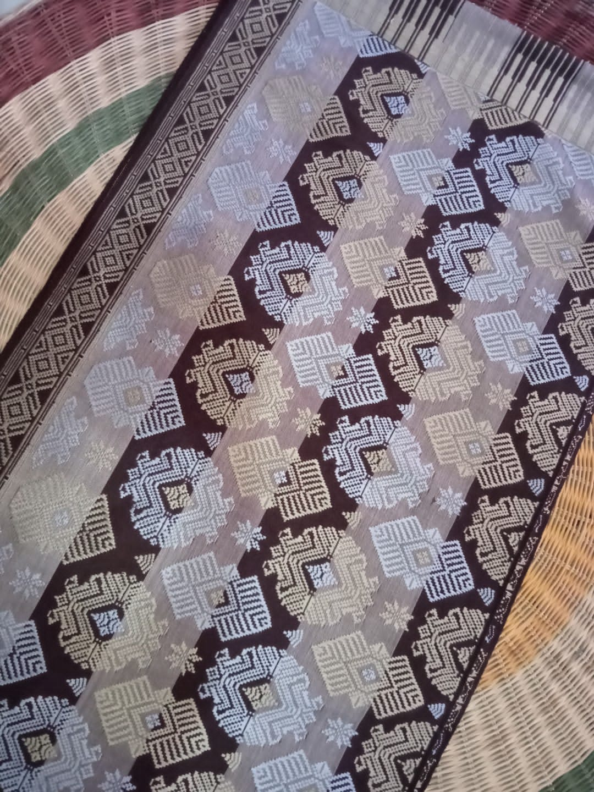
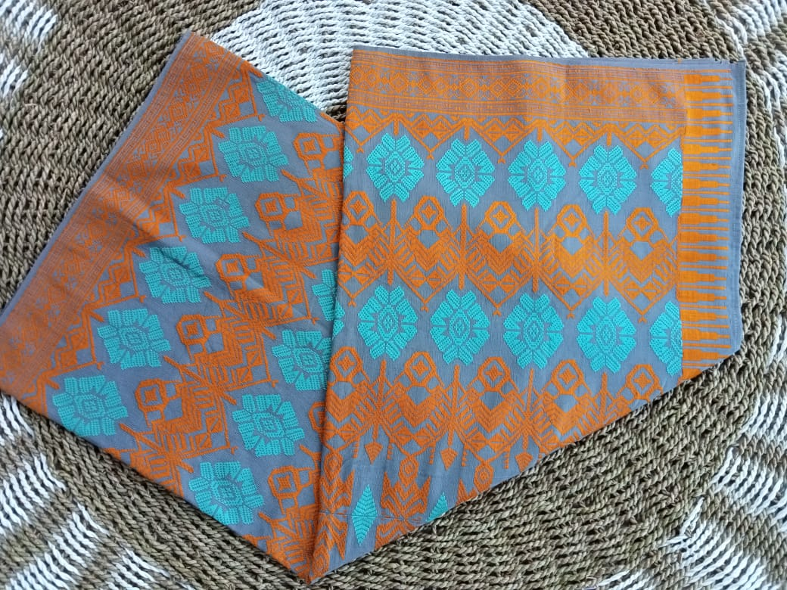
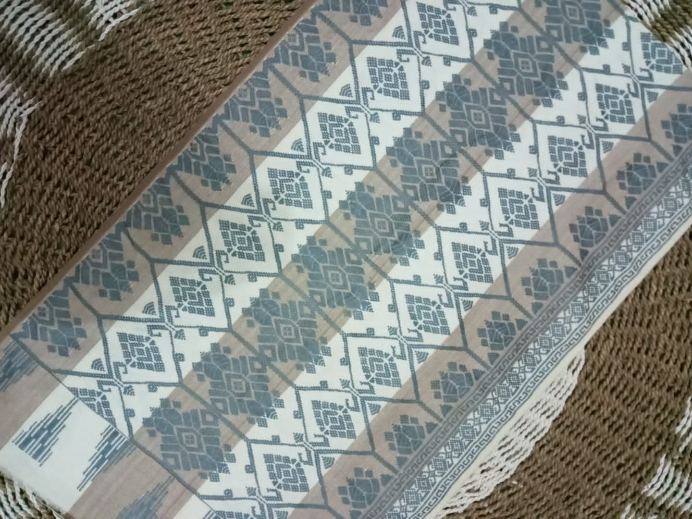
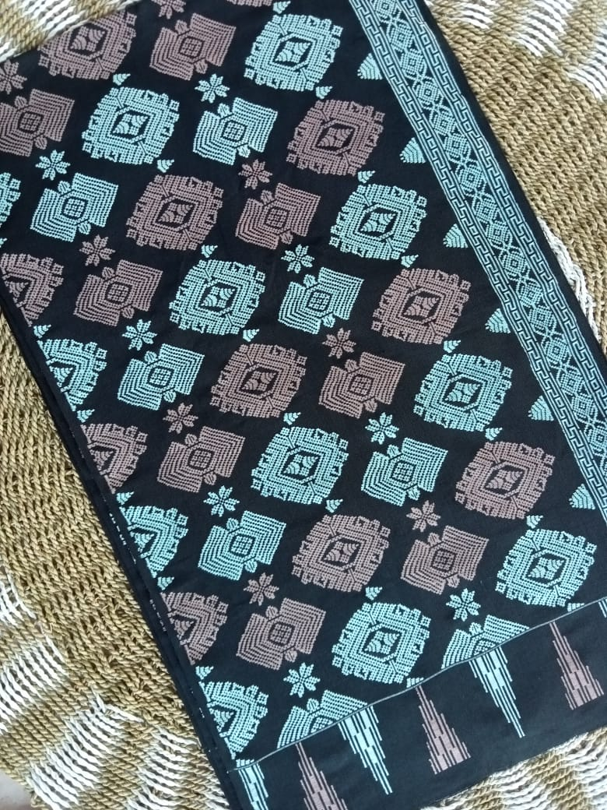
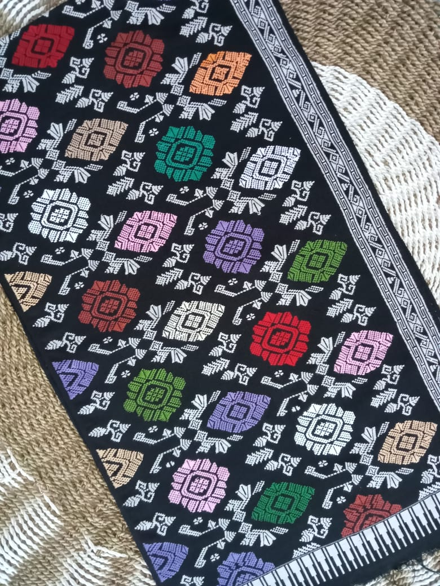
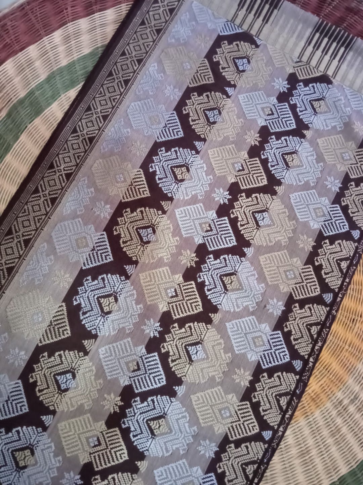

Daftar Destinasi Wisata Terpopuler
Tenun Tradisional
 









Sumber gambar: Syamsul Bahri
Salah satu wisata industri di Kabupaten Lombok Tengah adalah tenun tradisional yang berlokasi di Desa Sukarara, Kecamatan Jonggat. Berbeda dengan kain tenun dari desa - desa lainnya, kain tenun Sukarara memiliki keunikan dan ciri khas motif serta makna simbol. Pola yang digunakan bercirikan tradisional timur dan terdapat benang emas pada motif tenunnya. Jenis - jenis motif pada kain tenun Sukarara antara lain yaitu motif subahnale, motif bintang empat, motif kain komak, motif dobel trundak, motif rang - rang, motif nanas, motif bangket (petak sawah), motif alang (lumbung), motif barong, dan motif keker.
Proses pembuatan kain tenun Sukarara dilakukan secara tradisional tanpa menggunakan bantuan mesin dan dikerjakan oleh ibu - ibu serta para wanita di rumah mereka. Benang yang dipakai untuk membuat kain tenun merupakan benang pilihan sehingga bisa menghasilkan kain tenun yang halus, berkualitas, dan nyaman untuk dipakai. Di samping itu, warna kain tidak mudah luntur karena pewarnaan benang menggunakan bahan - bahan alami.